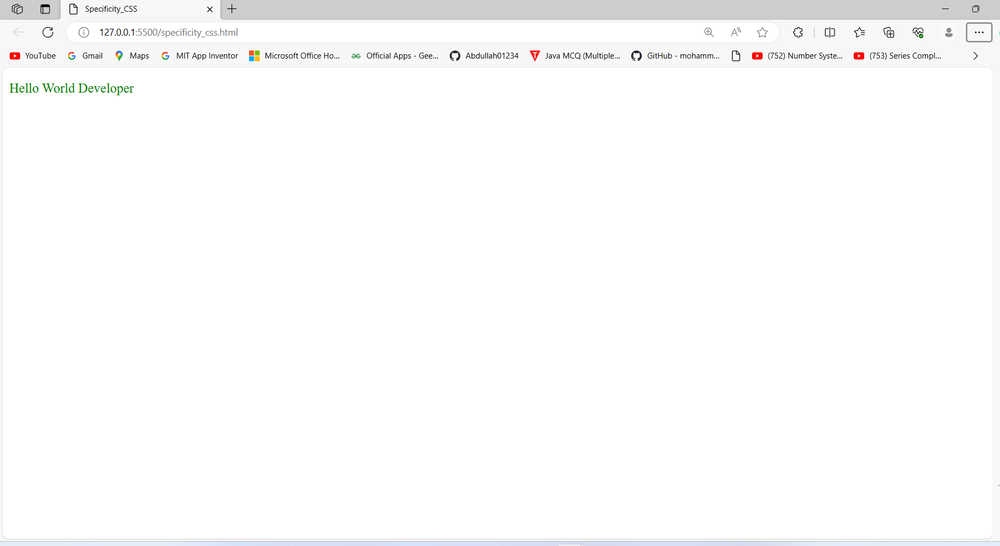
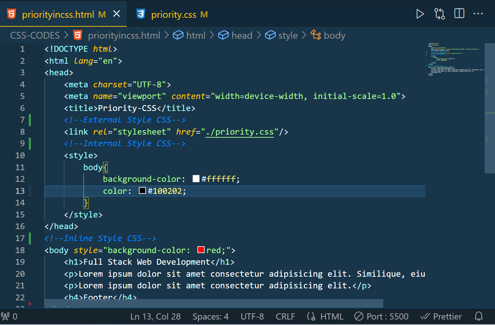

Ques 1: What is CSS?
OR, Introduction to CSS?
Ans: CSS (Cascading Style Sheets) is a stylesheet language used to describe the look and formatting of a document written in HTML. It is used to define the styles of elements on a web page, such as the font, color, size, and layout of text and other elements.
# Websites are one of the most important aspects of your brands online presence.It is important that we design it right.The website should be designed keeping in mind the users and should ensure that it provides a good user experience. CSS helps web developers to style the website so that the users can have a great user experience.
# It's basically used to create good-looking websites by describing how the HTML elements are displayed on the screen. It also controls the layout of the website.
# CSS for Beauty.
Ques 2: What does the Full Form of CSS?
Ans: CSS stands for Cascading Style Sheets.
Ques 3: What is the extensions of CSS?
Ans: The extension of CSS is .css .
Ques 4: Why CSS is important for Web Development?
Ans: Here are few ways to CSS is important for web development:
Ques 5: Why should to learn CSS?
Ans: There are several reasons to learn CSS:
Ques 6: What are the Features of CSS? Explain in details?
Ans: The main features of CSS are:
Ques 7: What are the Benefits of using CSS?
Ans: There are many number of benefits of CSS, including:
Ques 8: What is the CSS career opportunities?
Ans: CSS (Cascading Style Sheets) is a stylesheet language used to describe the look and formatting of a document written in HTML. It is used to define the styles of elements on a web page, such as the font, color, size, and layout of text and other elements.
# Learning CSS can open up a wide range of career opportunities in the field of web development and design, as CSS is an essential tool for creating visually appealing and consistent websites and web applications.
Ques 9: Why do you use CSS?
OR, Why CSS?
Ans: CSS is lightweight and relatively easy to learn.
# CSS is a core technology in web development.
# CSS specifies the presentation of HTML documents.
# It works on all devices: desktop, tablet, mobile, etc..
# CSS along with HTML are essential skills for web developers.
# This includes colors, backgrounds, fonts, spacing, animations, etc.
Ques 10: What can CSS do?
Ans: You can add new looks to your old HTML documents.
# You can completely change the look of your website with only a few changes in CSS code.
Ques 11: What are Advantages of having CSS in our Projects?
Ans: There are various advantages of having CSS in our Projects:
Ques 12: What are the different ways to bring CSS into an HTML file?
OR, What are the different ways to bring CSS into projects?
Ans: This ways to bring CSS into An HTML Files are:
OR
Ans: We can add CSS into our projects in the following ways:
Ques 13: Introduction to Inline styling CSS? Give the Example and Output of Inline Styling CSS?
Ans: Inline styling is a technique in HTML that allows you to apply style directly to an HTML element using the style attribute inside the body element. It is called "inline" because the style is applied directly to the element, in the same line of HTML code.
# Inline styles have the highest specificity, meaning that they will override any other styles that are applied to the same element.
# It is also possible to use JavaScript to modify the style attribute of an element and change its styles dynamically.
# This strategy reduces some of the benefits of style sheets, so it is suggested that you use them sparingly.
# Another way to include style sheets in an HTML document is through inline CSS.
# Utilize the style attribute on the appropriate tag if you wish to use inline CSS.
# By using the inline CSS approach, CSS can be applied to a single element.
# Example 1 of Inline Styling CSS, here using backgroundColor, headingColor, paragraphColor, and more..

# Output 1 of Inline Styling CSS, here using backgroundColor, headingColor, paragraphColor, and more..
# Example 2 of Inline Styling CSS, here using backgroundColor, paragraphColor, fontSize, border, solid, and more..
# Output 2 of Inline Styling CSS, here using backgroundColor, paragraphColor, fontSize, border, solid, and more..
# Example 3 of Inline Styling CSS, here using backgroundColor, headingColor, paragraphColor, fontSize, border, solid, and more..

# Output 3 of Inline Styling CSS, here using backgroundColor, headingColor, paragraphColor, fontSize, border, solid, and more..

Ques 14: What are the benefits/Advantages of Inline styling CSS?
Ans: You can quickly and easily insert CSS rules into an HTML page, which is useful for testing or previewing changes and performing quick fixes on your website.
# Inline takes precedence over all other styles. Any styles defined in the internal and external style sheets are overridden by inline styles.
# There is no need to create an additional file.
Ques 15: What are the Disadvantages of Inline styling CSS?
Ans: Within inline CSS, quotations are not permitted. The browser will perceive the use of quote marks as the end of your style value.
# Because they are not saved in a single location, these styles are difficult to update.
# Pseudo-codes and pseudo-classes cannot be styled with inline CSS.
# Inline CSS does not provide browser cache advantages.
# These styles can't be applied elsewhere.
Ques 16: Introduction to Internal styling CSS? Give the Example and Output of Internal Styling CSS?
Ans: Internal styling refers to the practice of using a style element within the head of an HTML document to define styles for the elements on the page. The style element should contain a list of CSS rules that specify the styles for the elements on the page.
# To use internal styling, you should place the style element within the head of the HTML document, and include your CSS rules within the style element. You can then apply the styles to the elements on the page using CSS selectors.
# The internal CSS is used to add a unique style for a single document.
# It is defined in "head" section of the HTML page inside the "style" tag.
# Example 1 of Internal Styling CSS, here using backgroundColor, headingColor, paragraphColor, and more..

# Output 1 of Internal Styling CSS, here using backgroundColor, headingColor, paragraphColor, and more..
# Example 2 of Internal Styling CSS, here using backgroundColor, headingColor, paragraphColor, fontSize, border, solid, and more..

# Output 2 of Internal Styling CSS, here using backgroundColor, headingColor, paragraphColor, fontSize, border, solid, and more..
Ques 17: What are the benefits/advantages of Internal Styling CSS?
Ans: IDs and classes can be used in internal style sheets
# You do not need to upload numerous files
# They might take precedence over outside style sheets
Ques 18: What are the Disadvantages of Internal Styling CSS?
Ans: They are useful for only the page they are specified on
# Internal style sheets increase page load times.
Ques 19: Introduction to External styling CSS? Give the Example and Output of External Styling CSS?
Ans: External styling refers to the practice of linking to an external CSS file from an HTML document using the link element. The link element should be placed within the head of the HTML document, and it should have a rel attribute with a value of "stylesheet" to indicate that it is linking to a style sheet.
# To use external styling, you should create a CSS file and define your styles in that file. You can then link to the CSS file from your HTML document using the link element.
# When you need to make changes to several pages, you often use the external style sheet.
# It is perfect in this situation because it enables you to alter just one file to alter the appearance of the complete website.
# It uses the "link" tag on every page and the "link" tag should be put inside the head section.
# Method to link using external styling CSS Syntax:

# Example_1 of External Styling CSS, here using backgroundColor, headingColor, paragraphColor, and more..


# Output_1 of External Styling CSS, here using backgroundColor, headingColor, paragraphColor, and more..

# Example_2 of External Styling CSS using HTML linking with CSS code, here using backgroundColor, headingColor, paragraphColor, fontSize, border, solid, textalign, and more..
# Output_2 of External Styling CSS, here using backgroundColor, headingColor, paragraphColor, fontSize, border, solid textalign, and more..

Ques 20: What are the benefits/Advantages of External Styling CSS?
Ans: The style of several documents can be controlled from site by using them
# Multiple HTML elements can have many documents, where classes can be created.
# To group styles in complex situations, selector and grouping methods are used.
Ques 21: What are the Disadvantages of External Styling CSS?
Ans: Extra download is needed to import documents having style information.
# To render the document, the external style sheet should be loaded.
# Not practical for small style definitions.
Ques 22: What do you mean by specificity in CSS?
Ans: If there are two or more CSS rules that point to the same element, the selector with the highest specificity value will "win", and its style declaration will be applied to that HTML element.
* Think of specificity as a score/rank that determines which style declaration is ultimately applied to an element.
Example:

Output:
Ques 23: What are the imporatnce of CSS Priority in the file?
# Example: In this example, the background color of the div element will be green, because the inline style has the highest priority. The background color of the body element will be blue because the inline style has a higher priority than the internal style. The background color of the paragraph element will be red because the internal style has a higher priority than the external style
# Example of CSS Priority using HTML Code:

# Example of CSS Priority in the CSS code:

# Output of the CSS Priority in the file:
Ques 24: Which CSS is highest order of priority?
Ans: Priorities of CSS: Inline CSS has the highest priority, then comes Internal/Embedded followed by External CSS which has the least priority. Multiple style sheets can be defined on one page.
# Example of CSS Priority Inline, Internal and External CSS Priority are:

# Output of CSS Priority Inline, Internal and External CSS Priority are:
Ques 25: How to Changing the priority order in the file?
Ans: If you want the rules in the external stylesheet to be prioritized over the rules in the internal stylesheet, you should include the external stylesheet after the internal stylesheet in the head of the document
# It's generally a good idea to use external stylesheets for most of your CSS, and only use internal style sheets in specific cases where you need to override those styles. This helps to keep your styles organized and maintainable.
Ques 26: What is the CSS Selectors?
Ans: CSS selectors are used for selecting the HTML elements that you want to style, and they are a fundamental part of working with CSS. In theory, selectors are patterns used to select the elements to which a set of styles will be applied. CSS selectors can be used to select elements based on their type, class, ID, attributes, or dynamic state or position.
Ques 27: What are the Types of CSS selectors?
Ans: We can divide CSS selectors into five categories:
Ques 28: What is the Simple Selectors? Give the Example and Output of Simple Selectors?
Ans: A simple selector is either a type selector or a universal selector. Simple selectors are pretty straightforward and used most of the time in development.
Ques 29: What are the types of Simple Selectors in CSS?
OR, How many types of Simple Selectors in CSS?
Ans: Simple Selectors are categories into five types:
Ques 30: What is Universal Selector in CSS?
Ans: The universal selector(*) applies the same styles to every element on the page.
Asterisk (*): symbol denotes the universal selector in CSS.
Syntax and codes of Universal Selectors CSS:
Output of Universal Selectors and include element selector:
Ques 31: What is Element Selector in CSS? Give the Syntax, example and Output of element selector in CSS?
Ans: The Element Selector only selects all the instances of a tag or element present on the webpage.
Syntax and Codes in Element Selector CSS:

Output of Element Selectors CSS
Ques 32: What is Class (.) Selector in CSS? Give the Syntax, example and Output of Class (.) selector in CSS?
Ans: The CSS class selector is probably the most useful and used selector, it selects all elements that have given the class value in their class attribute.
To select elements with a specific class, write a period (.) character, followed by the name of the class.
syntax and Codes in CLASS(.) Selector CSS:
 Selectors_in_html_codes.png)
 Selectors_in_css_codes.png)
Output of CLASS(.) Selector CSS:
 Selectors_in_html_css_Output.png)
Ques 33: What is ID (#) Selector in CSS? Give the Syntax, example and Output of ID (#) Selector in CSS?
Ans: ID selectors are the most powerful in terms of CSS specificity, just like the class selector, it targets specific elements in our HTML document that we can then use as a reference in our CSS.
To select an element with a specific id, write a hash (#) character, followed by the id of the element.
Note: IDs must be always unique and each element must have only one id to identify the element uniquely.
Syntax and Codes of ID (#) Selector CSS:


Output of ID (#) Selector in CSS:

Ques 34: What is Selector List (Multiple Selector list) in CSS? Give the Syntax, example and Output of Selector list (.h1, .h2, .h3) in CSS?
Ans: The CSS selector list (,) allows us to select multiple elements with different selectors at once and style them. We have more than one thing which uses the same CSS then the individual selectors can be combined into a selector list so that the rule is applied to all of the individual selectors.
This is done by grouping them in a comma-separated list and CSS selects all the matching elements in the list.
Syntax and Codes of Selector list in CSS:
Output of Selector list in CSS:
Ques 35: Introduction to the CSS Combinator Selectors?
Ans:A CSS selector can contains more than one simple selector. Between the simple selectors, we can include a combinator.
Ques 36: What are the Types of Combinator Selectors?
Ans: There are various Types of Combinator Selectors include:
Ques 37: Introduction to the Descendent selector? Give the Example and Output of Descendent selector?
Ans: Descendent in general means the one who is under or the one who is a child element.
# This selector allows us to select elements that are descendants of some other selector
# The descendant selector uses a space character to target an element that is a descendant of another element.
# Example of Descendent selector In HTML and CSS Codes:


# Output of Descendent selector In HTML and CSS Codes:

Ques 38: Introduction to the Child selector? Give the Example and Output of Child selector?
Ans: The child selector is also called a direct selector. It can only target the direct or immediate child of the parent selector.
# The > combinator acts more like the descendant combinator except that it is more particular and selects direct children of the parent element.
# Example of Child selector In HTML and CSS Codes:


# Output of Descendent selector In HTML and CSS Codes:

Ques 39: Introduction to the Adjacent sibling selector? Give the Example and Output of Adjacent sibling selector?
Ans: The + combinator selects adjacent element siblings.It will select only the element that is immediately after the mentioned element.
# Example of Adjacent sibling In HTML and CSS Codes:


# Output of Adjacent sibling In HTML and CSS Codes:

Ques 40: Introduction to the General sibling selector? Give the Example and Output of General sibling selector?
Ans: The ~ general sibling selector is used to select all elements that follow the first element such that all are children of the same parent.
# Example of General sibling selector In HTML and CSS Codes:


# Output of General sibling selector In HTML and CSS Codes:

Ques 41: Introduction to the Attribute selectors? Give the Example and Output of Attribute selectors?
Ans: The [attribute="value"] selector is used to select elements with a specified attribute and value.
OR
# The [attribute~="value"] selector is used to select elements with an attribute value containing a specified word.
# Example of Attribute selectors In HTML and CSS Codes:


# Output of General sibling selector In HTML and CSS Codes:

Ques 42: Introduction to the fonts?
OR What is Fonts?
Ans: Fonts are an essential aspect of design and can greatly affect the look and feel of a website or document.
# They can also play a role in how easily the content is understood and absorbed by the reader. Different fonts can convey different tones and moods, so it's important to choose a font that is appropriate for the context and aligns with a project's overall design and branding.
# Consistent font throughout a project helps to create a cohesive and professional look.
Ques 43: Introduction to the Google Fonts?
Ans: Google Fonts is a library of free, open-source fonts that you can use on your web projects.
# It was launched in 2010 and has since become one of the most popular sources for web fonts, with over 800 fonts available.
# The fonts are optimized for the web and can be easily integrated into a website by including a link to the Google Fonts in the HTML file.
# The fonts are free to use and can be easily customized.
# Google Fonts also consists of a range of useful tools, such as the ability to preview and compare different fonts and generate the necessary code for implementation.
Ques 44: How to Adding Google Fonts to a Web Project in VS Code?
Ans: There are various way to Adding Google Fonts to a Web Project in VS Code.
Step 1: Go to the Any Browser or Google chrome and type the Google Fonts library. and click on that "first link"

Step 2: Select the any fonts and customize the styles (For Example: Roboto, Noto Sans, Reddit Mono, Poppins, etc..).


Step 3: Generate the code for adding the fonts to your project in VS code inside "head" section.

Step 4:And also Use the font family code in your CSS.

Ques 45: What is a Box model?
Ans: The term "box model" is used when discussing a web application's design and layout.
# It is a box that wraps around every HTML element.
# It consists of : margins, borders, padding, and the actual content.
# Example of HTML and CSS Codes on Box_Model:


# Output of HTML and CSS Codes on Box_Model: